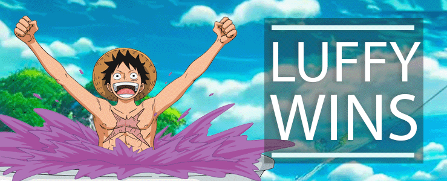

Characters
1. Satoru Gojo
from the anime Jujutsu Kaisen

chosen by Sheldon Gohetia
Introducing first, fighting out of the blue corner, ... I am
Sheldon Gohetia, and my favorite anime character is
Gojo. He is a fictional character from the anime and manga
series "Jujutsu Kaisen." He is a highly skilled and powerful
sorcerer who serves as a teacher at Tokyo Metropolitan Curse
Technical College. Sheldon
2. Monkey D. Luffy
from the anime One Piece

chosen by Henrique Gamborgi Menezes
And now, introducing in the red corner, coming from the vast seas
and fresh from a legendary quest for the One Piece, we have the
rubber and fearless pirate, Monkey D. Luffy! While a kid, Luffy ate
a miracle devil fruit who gave him a rubber body and uncountable
strength. He possesses several remarkable abilities that make him a
force to be reckoned with.
Obviously being made of rubber gives Luffy some special skills, such
as dodging objects and attacks, moving extremely fast, turning his
limbs giants and more. Luffy's resilience allow him to endure
physical pain and injuries. This mental ability is a key aspect of
his character, making him push beyond his limits in every bad
situation.
Of course, we can't forget to mention his biggest and probably only
weakness: he can't go underwater. The fruit he ate gives him his
power, but makes impossible for him to swim... Henrique
Round 1:Speed and Agility

Gojo is stronger than Luffy. Aside from the skill to swim in
any kind of water, he also has exceptional combat abilities, he has
mastered the so called "Infinity" technique, which grants him near
invulnerability and incredible speed. [Sheldon]
Luffy has powers that go way beyond than being made out of
rubber — you wouldn't believe how much you can do with that! During
his journey, he has developed incredible velocity, enough to make him
look like a blur on the battlefield. Not only incredible speed,
achieved by the "Observation Haki" technique, he can perceive any
movement of his opponent or incoming attacks, making Luffy near
untouchable. [Henrique]
Gojo is pretty fast. But Luffy's Haki gives him the upper hand on
this round.
Round 2:Strength

Luffy's strength is no joke, especially when he unleashes his
Gear Third, transforming his arms and legs into gigantic, inflated
weapons. His conquests against monsters and pirates on his world are
impressive. However, he's not fighting anyone of his world.
[Henrique]
Gojo, on the other side, holds the power of cursed energy,
capable of creating destructive magic fields and using techniques that
can disintegrate his enemies. In addition, Gojo possesses a unique
ability called the "Six Eyes" that grants him enhanced perception and
the ability to see the flow of Cursed Energy in greater detail and
make him untouchable. No matter how strong the opponent is, if it
can't land a single blow on him, it's useless. [Sheldon]
In this battle of strength, Gojo's overwhelming cursed energy and
his Six Eyes technique tips the scales in his favor.
Round 3:Fight IQ

Luffy is not really known for his inteligence. However, he is a
very creative and unpredictable opponent. He is always finding new
ways to use his powers, adapting and learning a lot from every fight,
to counter his enemies.
[Henrique]
Gojo, as a paragon of intellectual powers, a strategic virtuoso
whose mental acuity transcends conventional boundaries. His mind, akin
to a labyrinthine fortress, effortlessly navigates the complexities of
jujutsu techniques and tactics. Gifted with a prodigious understanding
of Cursed Energy and its intricate nuances, Gojo's brilliance
illuminates the darkest corners of mystic combat, gives him advantage
in the fight IQ and inteligence area. [Sheldon]
Gojo's inteligence is definitely one of his main weapons. Once
again, he comes up on top.
Decision:Results
After three intense rounds, the winner is the last one standing!
Satoru Gojo emerges as the victor, displaying superiority in
strength, and fight IQ. His combination of cursed techniques,
overwhelming cursed energy, and strategic brilliance proves to be too
much for the rubber pirate. In our epic anime character showdown,
Gojo's dominance in the Jujutsu Kaisen universe takes the belt home!
As said before, one of Luffy most impressive skills is his
endurance and ability to find new ways of fighting. Maybe after
learning a bit more about Satoru Gojo and his fighting style, Luffy
can come back stronger and ready for a proper rematch!


OR...
